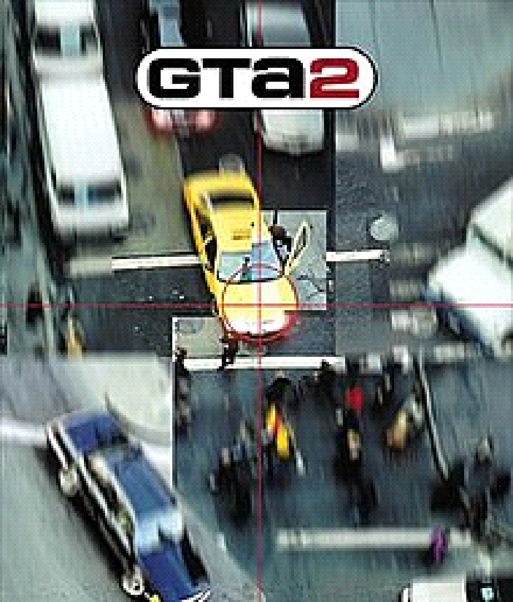

2. GTA 2 – Grand Theft Auto 2 (1999)

Grand Theft Auto 2 é um jogo de videogame de ação-aventura desenvolvido pela DMA Design e publicado pela
Rockstar Games. É o segundo título da série Grand Theft Auto e foi lançado em 1999 para PlayStation, Dreamcast
e PC. O jogo é ambientado em um futuro distópico em uma cidade fictícia chamada Anywhere City.
O jogador controla o personagem principal, um criminoso sem nome que é contratado por diferentes gangues da
cidade para realizar missões ilegais. Ao longo do jogo, o jogador se envolve em uma série de conflitos e
problemas com outras gangues e figuras do crime na cidade enquanto tenta escalar as fileiras da hierarquia
criminal.
Como o primeiro título da série Grand Theft Auto, GTA 2 oferece uma jogabilidade aberta que permite ao jogador
explorar a cidade e realizar uma ampla variedade de atividades, incluindo roubar carros, participar de missões
de rápido fogo e cometendo crimes. O jogo também introduziu um sistema de reputação, que afeta como as gangues
reagem ao jogador dependendo das ações do jogador.
GTA 2 foi bem recebido pela crítica e vendeu bem. Foi seguido por Grand Theft Auto III, que foi lançado em 2001
e introduziu uma série de mudanças e melhorias na jogabilidade e no mundo do jogo.
|
|
|